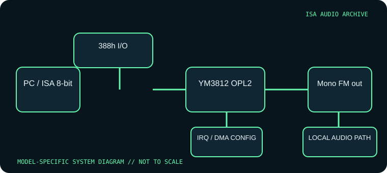

[ INDIVIDUAL COMPONENT // SOUND HARDWARE ]
AdLib Music Synthesizer Card (Model 1000)
The original AdLib Music Synthesizer Card is a dedicated FM-music board rather than a digitized-audio adapter. This entry covers the original YM3812/OPL2 design, not the later AdLib Gold or compatible clones.

Model-specific specifications
| Catalog identity | AdLib Music Synthesizer Card, original OPL2 design; record the exact board/model marking because reseller and revision labels vary. |
|---|---|
| Bus / host | 8-bit ISA. Designed for IBM PC/XT/AT-compatible DOS systems with an available 8-bit slot; modern machines without ISA do not directly support it. |
| Sound engine / I/O | Yamaha YM3812 OPL2, nine 2-operator FM voices; standard AdLib register window at I/O 388h–389h (status/data ports in the 388h–38Bh range). Mono audio output; no sample-playback codec. |
| IRQ | None required by the OPL2 music interface. It is polled through I/O registers, not serviced by an interrupt. |
| DMA | None. The original card has no PCM transfer engine, so it does not consume an ISA DMA channel. |
| Software / host compatibility | DOS games and music tools with native AdLib/OPL2 support. No Sound Blaster PCM compatibility is implied; Windows/game support depends on software explicitly selecting AdLib. |
| Connections / power | ISA slot supplies board power; mono audio output connects to amplified speakers or a mixer input. Verify output connector and board condition before attaching equipment. |
Compatibility & configuration notes
The important compatibility boundary is functional: a game’s AdLib music can use this card, but digitized effects need a separate PCM-capable adapter. The stable 388h interface simplified software support, while its fixed resource choice can conflict with other legacy devices claiming that range. For preservation, record PCB number, YM3812/DAC markings, output connector, and any modifications; do not identify a clone as an original AdLib solely from its OPL2 sound. The linked technical references distinguish register-level OPL2 behavior from the physical card archive.
- Photograph model/revision markings, resource switches or jumpers, connector panel and installed options before installation.
- For every configured IRQ, DMA channel, I/O address and driver, record the actual setting used by the host; do not rely on a family name or an assumed default.
- Power down and unplug the host before fitting or removing an ISA card; retain period setup tools and documentation with the specimen.
Sources & archival documentation
- DOS Days — original Ad Lib Music Synthesizer CardCard-specific archival record and board identification reference.
- Cosmo’s Cosmic Adventures — AdLib FunctionsRegister-level OPL2 I/O behavior and software programming reference.
Where related model variants exist, the original manual and the physical card’s complete part/revision marking take precedence over generalized family summaries.